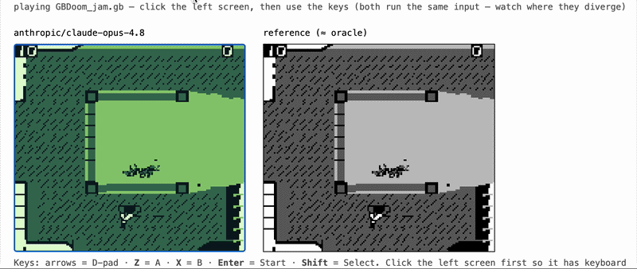

gameboy-eval
An open, free, local-first benchmark that measures how well a coding agent can build a Game Boy (DMG) emulator from scratch. Grading is automatic, deterministic, and runs for free on a laptop.

gameboy-eval gives a coding agent one job: write a working Game Boy emulator in Rust, with no libraries, starting from nothing. We drop the agent into a sandboxed, offline container alongside a black-box reference emulator (the "oracle"), let it iterate, and save whatever it produces as a portable WebAssembly module. Later, with the model completely out of the loop, we grade that module by running it next to the oracle and measuring how closely it matches.
The whole thing rests on one idea: you do not need to hand-write a test suite to know whether an emulator is correct, because you already have a correct emulator. So you grade a candidate by differential comparison against a trusted reference, frame by frame. That keeps grading cheap, reproducible, and independent of whichever model or provider produced the code.
It is an open, Game Boy take on the idea behind Mechanize's GBA Eval.
How we grade
Grading never asks the model anything. It runs the saved artifact and scores it against the oracle on three axes, then folds them into a single composite:
overall = 0.60 * replay + 0.20 * audio + 0.20 * procedural
- Replay (the centerpiece). Run the candidate and the SameBoy oracle in lockstep on the same recorded inputs and compare every rendered frame. The comparison uses structural similarity (block SSIM) instead of exact pixel equality, because two correct emulators are almost never bit-identical. The target is "almost the same almost everywhere," which tracks human-perceived correctness far better than an exact match.
- Procedural. Run a set of open, self-checking Game Boy test ROMs and compare the final screen to the oracle's. These ROMs exercise tricky CPU, timing, and PPU behavior, so passing them is strong evidence that the core is accurate.
- Audio. Compare the candidate's sound output to the oracle's using a log-mel spectrogram distance, through the same per-frame pipeline.
Results land in human-readable bands, so a single number is easy to interpret:
| band | composite |
|---|---|
| doesn't run | ~0 to 5% |
| barely works | ~15 to 30% |
| plays incorrectly | ~45 to 55% |
| mostly playable | ~70% |
| near-reference | ~85 to 99% |
| reference vs itself | 100% |
Two design choices make this practical. The artifact is a portable wasm module behind a fixed ABI: a candidate is a Rust crate that must build with one fixed command and export a small lockstep interface, which the grader drives from Python through wasmtime. And the model is out of the loop at grading time: generation happens once and costs money, while grading happens any number of times, offline, for free, and returns the same answer on every run.
Example results
A few candidates graded against the same oracle, spanning the range from a frontier model to a small local one:
| candidate | composite | band |
|---|---|---|
| oracle (self-play) | ~100% | reference vs itself |
| claude-opus-4.8 | 89.5% | near-reference |
| qwen2.5-coder:7b | ~0% | doesn't run |
The full ranked list, with per-section scores, lives on the leaderboard.
Why Game Boy
The original Game Boy (DMG) hits a sweet spot for a benchmark like this.
- Small enough to be tractable, rich enough to be hard. An 8-bit CPU (Sharp SM83), a simple but quirky PPU, timers, and audio. A faithful emulator is a real engineering effort rather than a weekend toy, yet it still fits in a single file.
- A culture of precise, open test ROMs. Decades of emulator-accuracy work left behind well-known, self-checking ROMs that pin down exact hardware behavior, which is exactly what a grader needs.
- Everything we depend on is open. No proprietary BIOS is required, and the reference emulator, the test ROMs, and the tooling are all freely available.
The GUI
A small browser control panel wraps the same scripts, using only the Python standard library and binding to localhost. It lets you check prerequisites, run the agentic generation loop against your chosen provider, grade artifacts and browse past runs, watch a candidate next to the real SameBoy oracle, play any candidate's emulator in your browser with live keyboard input and audio, and view a ranked leaderboard with a per-section score chart.
Built on open work
- SameBoy, a highly accurate open-source Game Boy emulator, run as the black-box oracle.
- c-sp/game-boy-test-roms, a curated bundle of the community's accuracy test ROMs.
- dmg-acid2 by Matt Currie, a single-frame PPU correctness test.
- rboy, a known-good third-party emulator compiled to wasm to confirm the grader is sound.
- Pan Docs, the canonical Game Boy hardware reference, and RGBDS for assembling the open boot ROM.